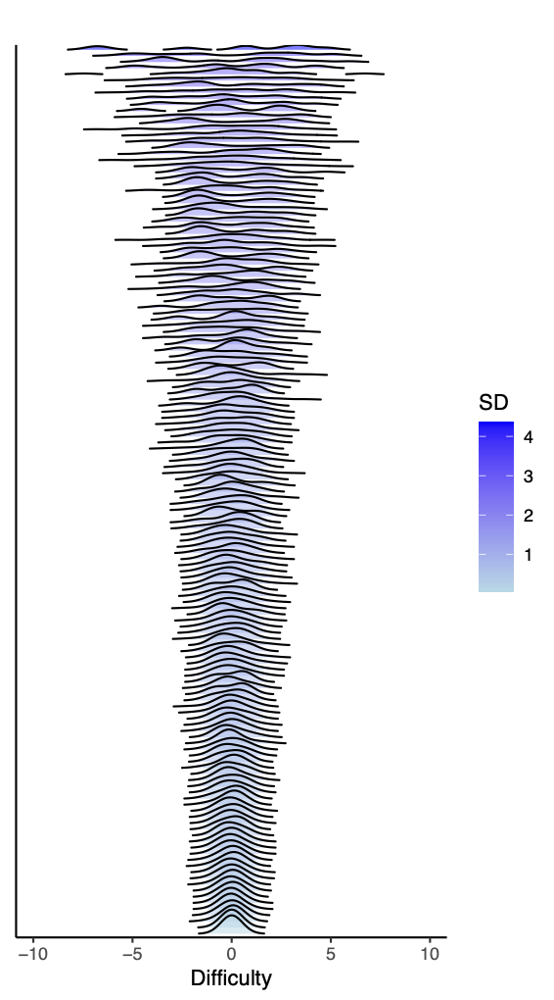

Simulation is a powerful way to understand how psychometric models behave under different conditions. But many simulation studies make a simplifying assumption — that item difficulties follow a perfectly normal or uniform distribution. In reality, real-world measures rarely look that simple. Some have mostly easy items, others have clusters of hard ones, and some even show multiple peaks in difficulty levels.
This tutorial introduces a practical way to simulate realistic item difficulties based on empirical data drawn from IRW. Using the irwR package, you can easily generate item difficulties that reflect the diversity seen in real assessments rather than relying on artificial assumptions.
How to Simulate Realistic Item Difficulties
Before simulation, we estimated item difficulties and their uncertainties across multiple IRW datasets and stored the results in a pooled database. Based on these estimates, empirical difficulty distributions were constructed by sampling according to the estimated parameters for each dataset (details refer to Zhang et al., 2025). The irw_simu_diff() function draws samples directly from these empirically derived distributions, rather than assuming a normal or uniform form, thereby generating realistic difficulty parameters that reflect both observed variability and estimation uncertainty.
Code
# download the packagedevtools::install_github("itemresponsewarehouse/Rpkg") # load the difficulty pool from the packagedata("diff_long", package ="irw")# seed setting for simulation reproducibilityset.seed(1)# usage of the simu_item_diff() functionsimulated_difficulties <- irw::irw_simu_diff(num_items =25,num_replications =100,difficulty_pool = diff_long)# num_items and num_replications define the number of items and the number of simulation replications, respectively
Difficulty Estimates Pool
The current difficulty pool includes 145 datasets from IRW (as of 10-2025), covering a wide range of sample sizes and number of items.
Code
# load the difficulty pool from the packagedata("diff_long", package ="irw")# package for plotlibrary(dplyr)library(ggplot2)library(ggridges)diff_long_sd <- diff_long |>group_by(dataset) %>%mutate(SD =sd(difficulty, na.rm =TRUE)) %>%ungroup()ggplot(diff_long_sd, aes(x = difficulty, y =reorder(dataset, SD), fill = SD)) +geom_density_ridges(scale =3, alpha =0.5, rel_min_height =0.01) +scale_fill_gradient(low ="lightblue", high ="blue") +theme_classic() +theme(axis.text.y =element_blank(),axis.ticks.y =element_blank() ) +labs(x ="Difficulty",y =NULL )
Below is the figure showing how varied these distributions can be — some centered, some skewed, some even multimodal. This diversity helps us better understand how measurement behaves under realistic conditions.

Note: The color intensity reflects the standard deviation of difficulties in each dataset, with darker shades signifying greater variability.
The IRW database is growing. As new datasets are added, we will periodically update the difficulty pool in the irw package to reflect an even broader range of assessments.
A Small Simulation: Why Should We Care About Difficulty Distributions?
We ran a small simulation to show why the item difficulty distributions matter. In particular, we examined how different distributions affect the sample size required for accurate parameter estimation.
We used the empirical difficulty distributions from each of the datasets in the IRW pool. For each dataset, the procedure consisted of the following steps:
Generate item difficulties: We sampled 50 items according to the empirical difficulty distribution from that dataset (as shown in the ridge plot above), and repeated this process 100 replications.
Simulate response data and estimate parameters: For a given sample size \(N\), we generated response data using a simple Rasch model with the known difficulties. We then estimated item difficulties from the simulated responses and computed the correlation between estimated and true parameters.
Search for the minimal sufficient sample size: To efficiently determine how many respondents were needed to achieve a reliable recovery, we used a binary search between \(N\) = 50 and 10,000. The search terminated once the average correlation across replications exceeded 0.95 and the gap between the lower and upper bounds of the search interval was less than 10.
The sample size requirement analysis demonstrates the strong influence of item difficulty distribution on model estimation. The results (shown below) revealed notable differences across datasets: for some difficulty distributions, accurate recovery could be achieved with fewer than one hundred respondents, whereas for others, several hundred were needed to reach the same level of accuracy. This variation is independent of the number of items (given that we always sampled 50 items). When the standard deviation (SD) of item difficulty is below 1, a smaller SD indicates less variation among item difficulties, which requires a larger sample size. As the SD increases, the required sample size initially decreases, but once the SD becomes too large, the required sample size begins to increase again.
Reference
For more details and additional simulation results, see:
Zhang, L., Liu, Y., Molenaar, D., Gilbert, J.B., Kanopka, K., & Domingue, B.W. (2025). Realistic Simulation of Item Difficulties. PsyArXiv.